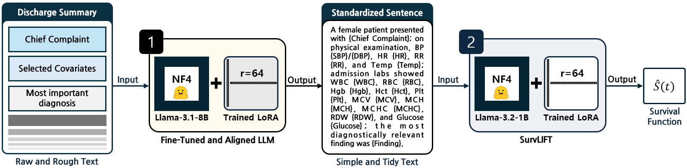
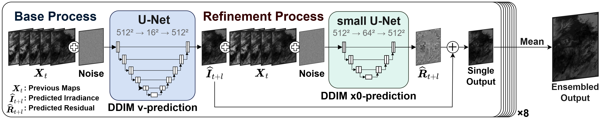
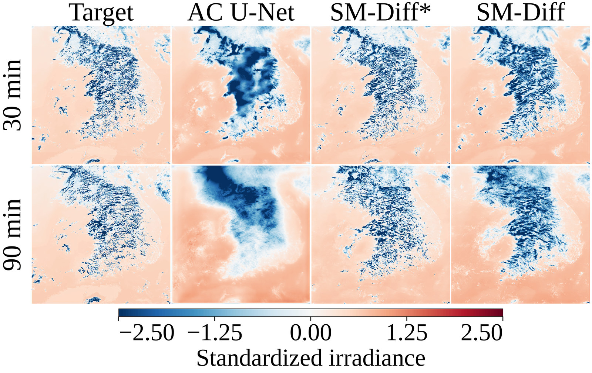
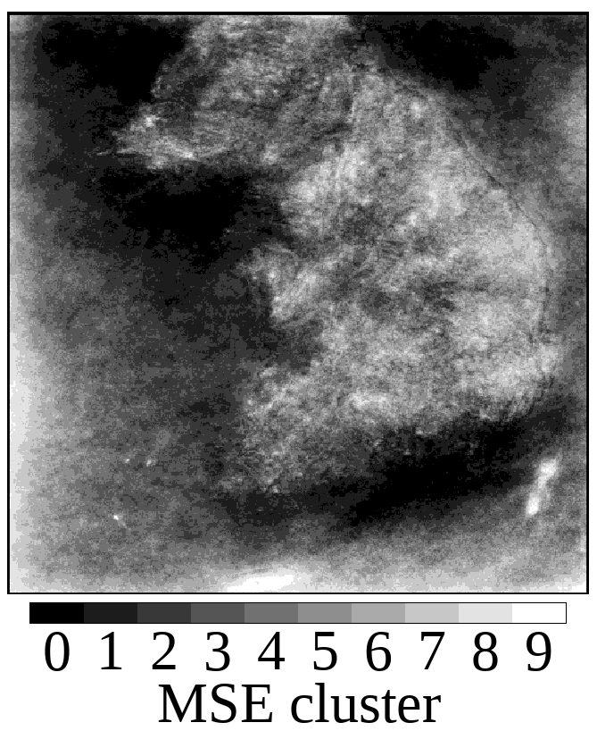
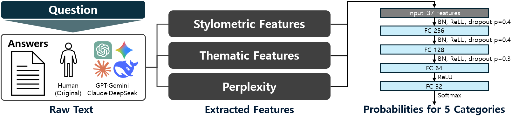
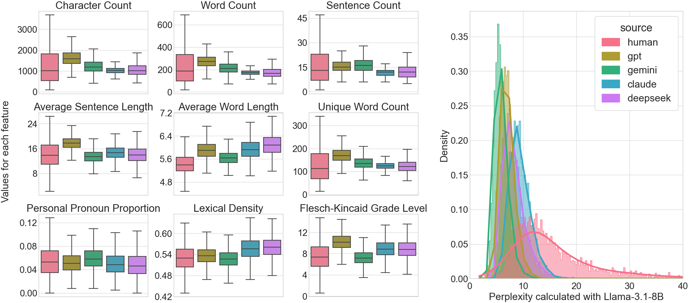
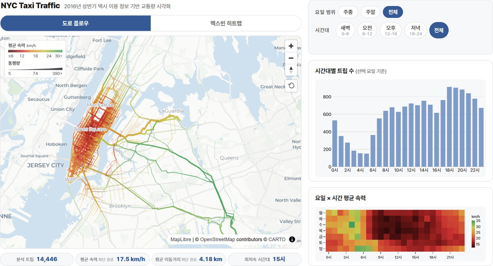
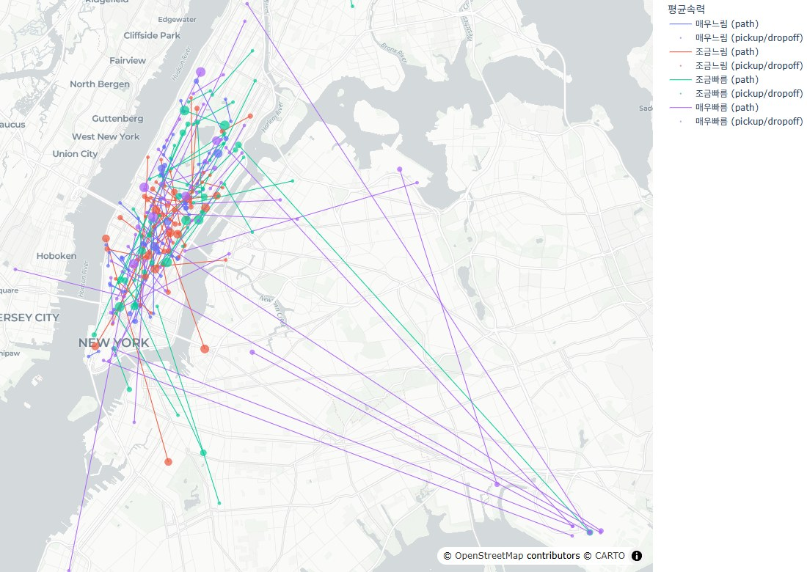
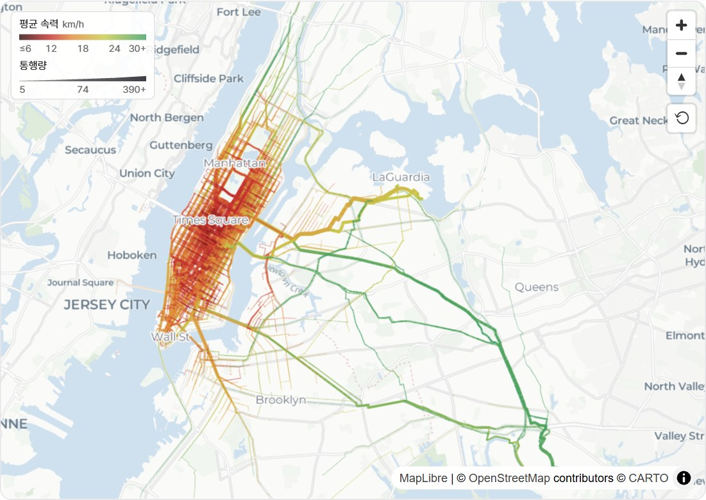

브라우저 인쇄(PDF 저장) 시 모든 프로젝트를 펼친 A4 문서 형태로 변환되어 출력됩니다.
강신성 Shinsung Kang
연구 활동을 바탕으로 LLM과 딥러닝 프로세스에 익숙한 데이터 사이언티스트
About
학부연구생 활동을 통해 다양한 기계학습 연구에 참여하여 실험 및 논문 작성을 수행해왔습니다. 실험에 필요한 Linux 기반 Docker 컨테이너 구축, 패키지 종속성 관리에 능숙합니다. R, SAS를 이용한 고전적인 데이터 분석부터, Pytorch, Transformers, vLLM 기반의 모델 학습·서빙까지 폭넓게 다룰 수 있습니다.
Education
- 2020.02
- 진안제일고등학교 졸업
- 2020.03
- 전북대학교 상경대학 경제학부 입학
- 2024.03
- 전북대학교 자연과학대학 통계학과로 전과 (학부 3학년)
- 2027.02
- 전북대학교 자연과학대학 통계학과 졸업 예정
Experience
전북대학교 입학처
정책연구과제 연구보조원
2025.04 - 2025.06
- 개요 — 광역모집단위 학사과정 입학생의 전공 배정을 위한 적절한 입학점수 정규화 방안을 탐색하는 과제
- 기여 — 샘플 데이터에 대하여 표준화·min-max 스케일링·분위수 정렬 방식으로 정규화 및 통합 순위 산정, 시각화 수행, 정규화 방식별 특징을 문서화하여 연구 담당 교수에게 인계
전북대학교 통계학과 지도교수 연구실
학부연구생
2025.07 - 현재
- 로컬 LLM 기반 Two-Phase 생존분석 연구 참여 — 첫 단계인 의무기록지 텍스트 규격화를 위해 SFT, DPO, PPO, 선호도 레이블링 등 수행
- 인간 작성/LLM 생성 텍스트 판별 연구 참여 — 퍼플렉시티 계산 및 예측 변수로 추가, 연구에 활용된 코드 오류 검토 및 아카이빙 등 수행
- 디퓨전 기반 한반도 일사량 예측 연구 참여 — 연구 중간 단계에 합류하여, Base 디퓨전 모델 예측 개선을 위한 보정 프로세스를 추가 구축
- 시계열 전이학습 베이스라인 실험 지원 — 리비전 단계 연구에 합류하여, 프론티어 베이스라인 PatchTST 기반 전이학습 코드 구축 및 베이스라인 실험 수행
- 서버자원 관리 — 연구실 내 H200, A6000, L40S 장착 서버의 도커 컨테이너 구축 및 기술 지원
- 세미나 활동 — 기계학습을 위한 수학, 강화학습, 생존분석, MCP, Agentic AI 관련 세미나 참여 및 담당 파트 준비
Certificates
- 빅데이터분석기사 (BAE)
- SQLD (SQL Developer)
- TOEIC 830 (2025.04 취득)
Skills
- 언어
-
 Python
Python
 R
Julia
SAS
R
Julia
SAS
 C#
C#
- ML · DL
-
 PyTorch
PyTorch
 HuggingFace
HuggingFace
 vLLM
vLLM
 scikit-learn
scikit-learn
- 데이터 · 시각화
-
SQL(ANSI·Oracle)
 pandas
pandas
 NumPy
NumPy
 Plotly
Plotly
 matplotlib
matplotlib
- 인프라 · 도구
-
 Linux
Linux
 Docker
Docker

 git/GitHub
git/GitHub
 Claude Code
wandb
Claude Code
wandb
Publications & Contributions
- Hyungbin Park†, Shinsung Kang†, Kihoon Lee, Gwangsu Kim. (2026). Study on comparative and discriminatory methodology of human and machine-generated languages. Korean Journal of Applied Statistics, 39(3), 235–255. † 공동 1저자 DOI
- Minwoo Lee, Youngmi Lee, Gwangsu Kim. (2026). Transfer Learning Based on N-BEATS in Forecasting Univariate Time Series. IEEE Access, 14, 45191–45212. 베이스라인 실험 기여 (Acknowledgement) Link GitHub
Featured Projects
LLM 기반 생존분석 연구
연구 진행중
의무기록지 텍스트를 입력으로 생존분석을 수행하는 2단계 파이프라인
- Harrell's C-index+10% 이상Cox·DeepHit 대비, 파이프라인 최종 결과
- AI·인간 선호도 일치율0.5 → 0.7무작위 응답 쌍의 순위 일치 확률
- 출력 규격 준수100%최종 모델의 전체 출력 기준

배경 Situation
- LLM을 생존분석에 활용하여, 기존 생존분석에 필요한 태뷸러 데이터 이외에도, 분석 환자에 대한 중요한 정보를 포함하는 텍스트 데이터를 활용하려는 연구
- 의무기록지 텍스트는 작성 형식 및 분량이 통일되지 않아, 원문을 그대로 사용할 경우 생존함수를 안정적으로 도출하기 어려움
- 텍스트를 약속된 문장 형태로 규격화하고, 이를 기반으로 생존함수를 추정하는 2단계 구조를 이용
역할 Task
- 원본 의무기록지 텍스트를 규격화하는 Phase 1 전면 담당
- 동료 연구자 이탈로 인해 소스 데이터 가공부터 학습, 결과 데이터 처리, 레이블링 일부까지 위임받아 수행
- 위임받은 업무 중 오픈소스 LLM 기반 선호도 레이블링에서 무작위에 가깝던 퍼포먼스를 개선
수행 Action

학습 파이프라인
- 데이터 구축: MIMIC-IV v3.1의 Admissions·Patients 테이블과 MIMIC-IV-Note v2.2의 Discharge 테이블을 활용하여 훈련·검증·테스트 데이터 구성
- SFT: 원본 의무기록지에 대하여 의료 도메인 지식을 가진 연구원이 레이블링한 규격화 문장 100개 쌍의 메시지 데이터셋으로 Llama-3.1-8B-Instruct 모델에 SFT 적용
- 선호도 레이블링: SFT 모델이 의무기록지당 5개 응답을 확률적으로 생성하고, 인간 주석자 또는 오픈소스 LLM이 순위 평가. 인간 레이블링 대상 200건 중 130건 직접 수행
- 선호도 조정: 의무기록지당 5C2 = 10쌍, 총 2,000쌍의 선호도 데이터셋으로 SFT 모델을 이어서 학습. 퍼포먼스 비교를 위해 선호도 레이블링 방법(인간/AI) × 선호도 조정 알고리즘(DPO / Reward Model + PPO)의 4가지 조합 비교
- 결과 전달: 사후학습을 마친 모델에 vLLM의 연속형 배치를 사용하여 추론을 수행. 의무기록지 테스트 데이터를 규격화한 뒤, Phase 2인 SurvLIFT에 전달
세부 사항
- 기존 라이브러리 활용: TRL, PEFT, datasets 등 HuggingFace 제공 라이브러리와 vLLM을 적절하게 활용하여 구현 및 추론에 필요한 시간을 최소화
- 사후학습 세부 설정: 매우 긴 토큰의 텍스트를 적절하게 학습시키기 위해 QLoRA(NF4, r=64), Assistant Only Loss를 공통으로 사용. 선호도 조정에는 병합 후 재양자화 대신, LoRA를 policy와 reference로 두 번 로드하여 양자화 오차 해소
- 학습 모니터링: wandb를 사용하여 훈련 로그 및 지표 곡선을 추적하여 적절한 하이퍼파라미터를 세팅하고, 검증 데이터셋을 기반으로 최적의 체크포인트 선택
- AI 레이블링 개선: 오픈소스 LLM 기반 선호도 레이블링의 기존 성능을 개선하기 위해 프롬프트 구체화 및 구조화, 퓨샷 예시 주입, 추론 활성화 등의 테크닉을 활용
- 강화학습 기반 알고리즘의 체크포인트 선택: 검증 손실이 제공되지 않는 PPO의 경우, 체크포인트별로 생성한 검증 텍스트들의 품질을 정량·정성적으로 비교하여 인간 피드백 기반으로 직접 선택
성과 Result
- 학습된 모델의 모든 출력이 약속된 규격을 준수함을 확인. 학습 데이터의 양적 결여로 인해, 문장형 묘사 자체의 품질 문제 식별됨
- 최종 생존함수 추정에서 베이스라인 모델인 Cox, DeepHit 대비 Harrell's C-index 10% 이상 개선
- 인간·AI 선호도 레이블 간 순위 일치 확률을 무작위 수준인 0.5에서 약 0.7로 개선
디퓨전 기반 한반도 일대 일사량 예측 연구
논문 투고 중 · 제2저자
과거 위성 일사량 이미지 시계열로 미래 일사량을 예측하는 디퓨전 기반 2단계 예측-보정 파이프라인
- MSE · MAE3개 예측 시점 1위30·60·120분 최저 · 90분 2위
- FID (지각적 사실성)−26 ~ 54%LPIPS (지각적 유사도)−24 ~ 28%직전 연구(AC U-Net) 대비 · 낮을수록 우수
- CRPS (확률 예측 오차)−5 ~ 16%Refiner 적용 전후 개선 · 전 지평선

배경 Situation
- 과거 2시간 이전부터 현재까지 30분 간격으로 관측된 위성 일사량 이미지 5장으로, 30·60·90·120분 후의 일사량 이미지를 예측. 선행 연구 모델인 AC U-Net의 후속 연구
- 기존 LSTM·U-Net 등의 Regression 계열 모델은 우수한 픽셀 단위 예측 성능을 보이나, 이미지의 국지적 정보를 흐릿하게 뭉개는 한계가 존재
- 예측의 픽셀 단위 정확성과 함께, 지구과학 분야에서 중요한 이미지의 지각적 사실성을 동시에 확보하기 위해 디퓨전 모델 채택
- 연구에 참여한 석사과정 학생의 졸업 및 취업으로 인한 이탈 이후 실험과 성능 개선이 정체된 상황에서, 지원 역할로 참여
역할 Task
- Base 디퓨전 모델의 예측을 보정하는 후처리 모듈(Refiner) 설계 및 학습
- 결과에 대한 정량적·정성적 분석 수행
수행 Action
학습 파이프라인
- 데이터: 한반도 정지궤도위성 천리안 2A호의 이미지에 검증된 물리 모델을 적용하여, 픽셀 단위로 태양 에너지를 계산. 계산된 일사량 맵(512×512, 30분 간격)을 훈련·검증·테스트에 활용. 동료 연구원에게서 제공받음
- Base 모델: 전반부 담당 연구원에게 Base 디퓨전 모델로 훈련·검증·테스트 전 구간에서 각 시간별로 생성된 확률적 예측 8개 수령
- 잔차 계산: 훈련·검증·테스트 전 구간에서 서로 다른 8개의 Base 예측과 실제 맵의 차이인 잔차를 계산
- Refiner: 훈련 데이터의 과거 일사량 맵 5장과, Base 예측을 조건으로, 노이즈에서 잔차를 직접 복원하는 x0-prediction 기반 소형 U-Net 훈련. 검증 오차 기반 최적 체크포인트 선택. 예측 시간(30-120분)마다 별도로 모델 훈련
- 앙상블: 테스트 데이터에 대해서 Base 예측 8개 각각에 Refiner가 추정한 잔차를 더한 뒤 평균 앙상블로 최종 예측 산출
세부 사항
- 코드베이스 인수: Claude Code CLI를 사용하여 기존 소스코드를 분석함으로써, 신속하게 실험 구조를 파악하고, 후속 작업의 기반을 마련
- 잔차 분포 학습: 특정 시각 하나에 대해 서로 다른 8개의 잔차를 학습시켜, Base 모델 잔차의 확률 구조를 최대한 반영
- 오차 지도 분석: 테스트 전체의 픽셀 단위 MSE를 10개 구간의 k-means로 군집화하고, 오차 지도를 실제 지도와 대조하여, 고오차 지대의 구조를 두 가지로 설명
- 남서쪽 경계: 편서풍 및 하계 몬순 제트 기류를 따라 남서쪽에서 이미지 외부에서 유입되는 구름을, 모델이 사전 정보 없이 예측해야 함
- 내륙 산지: 내륙의 경우 태백산맥과 같은 구조가 상승기류와 구름을 생성
성과 Result


- 픽셀 단위 정확성과 지각적 사실성을 종합적으로 충족
- 30·60·120분 예측에서 모든 베이스라인 대비 가장 낮은 MSE와 MAE 달성, 90분에서는 선행 연구 모델인 AC U-Net에 이어 두 번째로 우수
- 최종 모델은 AC U-Net 대비 FID 26~54%, LPIPS 24~28% 감소. 앙상블 없는 단일 예측은 모든 예측 시점에서 학습 기반 모델 중 가장 낮은 FID 기록
- Refiner가 예측의 선명도를 높여, Base 모델 멤버 간 산포를 교정함으로써 예측 정확도를 향상시킴을 식별. CRPS(Continuous Ranked Probability Score)의 커널을 분해하여 분석했을 때, 산포 증가가 앙상블 평균의 정확도 개선으로 이어짐을 식별
인간/LLM 생성 텍스트 판별 연구 LLMdetector
KCI 등재 · 공동 1저자
텍스트에서 추출한 해석 가능한 통계적 피처로 인간 작성 텍스트와 LLM 생성 텍스트를 판별하는 연구
- 이진 분류 정확도 · F1-Score0.9778 · 0.9864인간 vs LLM
- 다중 분류 정확도 · F1-Score0.8598 · 0.8607인간 + LLM 4종의 5개 출처 · Macro 평균
- Perplexity 추가 효과오분류율 −44.64%이진 분류 · 다른 피처만 쓴 모델 대비

배경 Situation
- 텍스트의 인간 작성, LLM 생성 여부를 텍스트에서 추출한 피처를 기반으로 판별하는 연구
- 텍스트 자체를 분류 모델에 입력하지 않고, 추출된 통계적 특성을 비교함으로써 인간과 LLM 간의 설명 가능한 차이를 식별하는 것이 목표
- 학부연구생으로 참여한 첫 연구
역할 Task
- Perplexity 피처 제안 및 구현
- 코드 오류 검토와 버전 관리
- 피처 분포 시각화 및 해석
수행 Action
연구 흐름
- 데이터: 질의응답 웹사이트 Quora에서 추출된 질문·답변과, 해당 질문에 대한 GPT-4o·Gemini 2.0 Flash·Claude 3.7 Sonnet·DeepSeek의 생성 답변으로 이루어진 더한 자체 구축 벤치마크 데이터. 클래스에 대한 80:20 층화 분할로 학습·평가에 활용. 동료 연구원에게서 제공받음
- Perplexity: Transformers 라이브러리를 활용하여 Llama-3.1-8B로 각 텍스트의 토큰별 조건부 확률을 계산
- 피처 통합: 동료 연구자가 설계한 문체 분석 기반 피처(고전적 NLP 통계량), 내용 분석 기반(LDA 토픽) 피처와 Perplexity를 통합하여 총 37차원 피처 벡터 구성
- 분류 모델: 표준화한 피처 벡터로 네개 레이어를 가지는 MLP를 학습하여, 다섯 범주에 대한 다중 분류 모델을 구성
- 이진 분류: 평가 데이터에서 다섯 범주 확률을 그대로 다중 분류에 활용하거나, 네 개의 LLM 범주 확률을 합산하여 인간/LLM 이진 분류에 활용
- 결과 해석: 문체 분석 기반 피처와 Perplexity의 범주별 분포를 시각화하여 인간과 LLM, 개별 LLM 간의 차이를 해석
성과 Result
우수한 분류 성능
- Perplexity 추가 시 정확도가 이진 분류 0.9599 → 0.9778, 다중 분류 0.8217 → 0.8598로 향상. 오분류율 기준 각각 44.64%, 21.37% 감소
- Perplexity 단독 모델은 이진 분류 정확도 0.8864로 준수하나 다중 분류에서는 0.4732에 그쳐, 나머지 통계적 피처들이 Perplexity에 없는 LLM 식별 정보를 다수 포함함을 확인
분포 차이 식별

- 인간: 모든 피처에서 분산이 가장 크고, Perplexity의 경우 평균적으로 높아 LLM과 뚜렷이 다른 분포로 나타남
- GPT: 문서와 개별 문장이 가장 길고, 플레시-킨케이드 가독성 지수또한 높아, 읽기 어려운 문장을 구사하는 경향 존재
- Gemini: 평균적으로 문장 수는 가장 많으나 문장 길이가 가장 짧아, 문서 자체의 길이는 짧음
- Claude · DeepSeek: 출력이 짧고 길이가 일정하나 어휘 밀도가 가장 높아, 짧은 분량에 내용을 압축하는 경향 존재
NYC 택시 트래픽 대시보드 NYCTaxiDash
라이브 데모
2016년 NYC 택시 운행 기록으로 요일·시간대별 도로 정체를 탐색하는 인터랙티브 대시보드. 2023년 데이터시각화 기말 프로젝트를 Claude Code로 재구축
- 지도에 표현한 트립146건 → 14,339건소수 표본 직선 연결 → 실제 도로망 경로
- 요일·시간별 지도1개 → 15개전 기간 1장 → 요일 범위 3개 × 시간대 5개
- 화면 구성2페이지 → 1화면구성요소 컴팩트화

배경 Situation
- 2023년도 2학기, 통계학과 전공 과목인 데이터시각화 강의에서 기말 개인 프로젝트로 제작한 Quarto·Plotly 대시보드를 개선
- 직선 경로 지도와 히트맵으로만 구성된 기존 시각화는 가시성이 떨어지고, 요일·시간대·지역별 흐름 파악이 어렵다는 한계 존재
- 교통량을 직관적으로 가늠할 수 있는 대시보드를, 직접적인 코드 작성 없이 AI 에이전트만으로 제작하고자 시도
과업 Task
- 대시보드 구성요소 및 레이아웃 설계
- Claude Code 에이전트에게 디자인·시각화 중심의 피드백을 반복 제공하며 프로젝트 방향성 유지
수행 Action
구축 과정
- 데이터 정제: 강의 제공 표본 14,587건에서 뉴욕시 범위 밖 좌표, 60초 미만 운행, 비정상적인 거리·속력 기록 141건 제거
- 도로망 경로 추정: OSMnx 패키지로 승하차 지점 간 최단 경로를 계산하여, 경로 기준 평균 속력(km/h)과 이동거리 산출
- 통행량 집계: 도로 구간별 통행량과 평균 속력을 주중·주말·전체 × 새벽·오전·오후·심야·전체의 15개 조합으로 사전 집계
- 시각화: 지도에 속도와 통행량을 선의 색과 두께로 표시하고, 요일·시간대 선택에 따라 차트·수치를 즉시 재집계. 모든 플롯을 인터랙티브로 구성하여 필요 시 상세 정보 확인 가능
- 배포: 서버 없이 정적 파일만으로 동작하도록 구성하여 GitHub Pages로 배포
개선 과정
- 속력 기준: 승하차 지점 간 단순 직선거리 기준 평균 속력이 14.4 km/h로 지나치게 낮은 것을 확인하고, 실제 주행에 더 가까운 도로망 최단 경로 기준으로 전환 (평균 17.5 km/h)
- 지도 표현: Charles Joseph Minard의 나폴레옹 러시아 원정 시각화 지도에서 착안하여, 선 두께로 통행량을, 색으로 평균 속력을 나타내 유동 차량과 정체 수준을 시공간적으로 함께 표현
- 한 화면 구성: 스크롤로 내려야 하는 과도한 컨텐츠 대신, 보는 사람의 시선과 집중이 분산되지 않도록 한 화면에 시각화만 배치. 해석은 직접 유추하거나, 타인이 말로 설명하는 편이 적절하다고 판단하여 별도 문서로 분리
성과 Result
시각화 개선


- 단순 직선 경로와, 순서형 속도 범주를 실제 도로에서 통행량과 속도로 대체하여 정체 구간을 직관적으로 식별
- 요일·시간대별로 플롯을 확인할 수 있어, 시공간적 흐름을 직접 확인 가능
주요 관찰
- 최저속 시간대: 종합적으로 15시가 14.4 km/h의 평균 속도로 가장 느리며, 09시가 14.5 km/h로 뒤를 이음
- 주중·주말 차이: 출근 시간대인 09시는 주중 13.2 km/h로 최저속이나, 주말이 20.1 km/h로 높아 전체 평균에서 상쇄
- 택시 이용 집중 시간대: 05시가 150건으로 가장 적고, 18시와 19시가 그 6배 이상인 912건, 903건으로 가장 많음